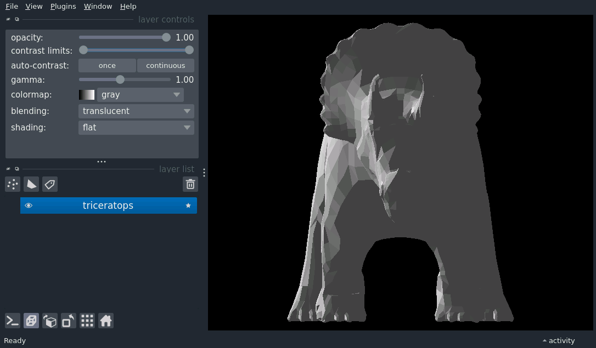

Note
Click here to download the full example code
Mesh headlight (plugin)
An example controlling the mesh headlight, using napari-threedee as a napari plugin.

import napari
import numpy as np
from vispy.io import load_data_file, read_mesh
# Fetch datasets - this will download dataset if datasets are not found
vertices, faces, _, _ = read_mesh(load_data_file('orig/triceratops.obj.gz'))
# put the mesh right side up, scale it up (napari#3477) and fix faces handedness
vertices *= -100
faces = faces[:, ::-1]
vertex_values = np.ones((len(vertices),))
# create an empty viewer
viewer = napari.Viewer(ndisplay=3)
# add the mesh
viewer.add_surface((vertices, faces, vertex_values), name='triceratops')
# open the plugin
viewer.window.add_plugin_dock_widget(
plugin_name="napari-threedee", widget_name="mesh lighting controls"
)
napari.run()
Total running time of the script: ( 0 minutes 0.950 seconds)
Download Python source code: mesh_headlight_plugin.py